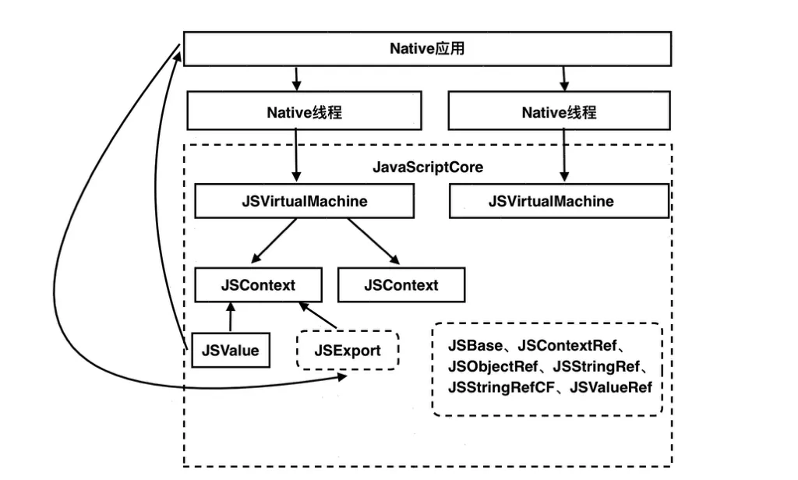

WKWebView
在 WKWebView 的代理方法中拦截按钮中的url，取出url的关键参数，然后做你想做的操作。
之前主要使用UIWebView进行页面的加载，但是UIWebView存在很多问题，在2020年已经被苹果正式抛弃。所以本篇文章主要讲解WKWebView，WKWebView从iOS8开始支持，现在大多数App应该都不支持iOS7了。
UIWebView存在问题
- 内存消耗比较大
- 性能很差。
WKWebView优势
- 相对于UIWebView来说，性能要比UIWebView性能要好太多
- 刷新率能达到60FPS。
- 内存占用也比UIWebView要小。
- WKWebView是一个多进程组件，Network、UI Render都在独立的进程中完成。由于WKWebView和App不在同一个进程，如果WKWebView进程崩溃并不会导致应用崩溃，仅仅是页面白屏等异常。页面的载入、渲染等消耗内存和性能的操作，都在WKWebView的进程中处理，处理后再将结果交给App进程用于显示，所以App进程的性能消耗会小很多。
网页加载流程
- 通过域名的方式请求服务器，请求前浏览器会做一个DNS解析，并将IP地址返回给浏览器。
- 浏览器使用IP地址请求服务器，并且开始握手过程。TCP是三次握手，如果使用https则还需要进行TLS的握手，握手后根据协议字段选择是否保持连接。
- 握手完成后，浏览器向服务端发送请求，获取html文件。
- 服务器解析请求，并由CDN服务器返回对应的资源文件。
- 浏览器收到服务器返回的html文件，交由html解析器进行解析。
- 解析html由上到下进行解析xml标签，过程中如果遇到css或资源文件，都会进行异步加载，遇到js则会挂起当前html解析任务，请求js并返回后继续解析。因为js文件可能会对DOM树进行修改。
- 解析完html，并执行完js代码，形成最终的DOM树。通过DOM配合css文件找出每个节点的最终展示样式，并交由浏览器进行渲染展示 结束链接。
JS 主动调用 OC 的方法的处理
- JavaScript的配置
JavaScript调用Native的方法就需要前端和Native的小伙伴们配合了，需要前端的小伙伴在JS的方法中调用
html代码window.webkit.messageHandlers.<添加监听的方法名>.postMessage(参数);<!-- 该按钮的目的是：点击后触发OC的方法--> <button type="button" onclick = "JSCallOCMethod1()">JSCallOCMethod1</button> <!-- 定义各个方法--> <script type="text/javascript"> // js 主动调用 oc 方法 ，function JSCallOCMethod1 这个名字无关，这个是JS 绑定的 function JSCallOCMethod1(){ // JSCallOCMethod1 是 oc 注册监听的方法 window.webkit.messageHandlers.JSCallOCMethod1.postMessage({"key1":"value1","key2":"value2"}); } </script> - 处理添加监听的方法名，即 JS 主动调用 OC 的方法
```Object-C
pragma mark - WKScriptMessageHandler
- (void)userContentController:(WKUserContentController *)userContentController
// message.name 添加监听的方法名 if ([message.name isEqualToString: @"JSCallOCMethod1"]) {didReceiveScriptMessage:(WKScriptMessage *)message {
} } ```// message.body 是 `js` 传递的参数 ,一般是 json 字符串 NSLog(@"MessageBody: %@", message.body);
OC 主动调用 JS 的方法的处理
WKWebView对于执行js代码提供了两种方式
- 通过userContent添加一个WKUserScript对象的方式
通过webView的evaluateJavaScript:completionHandler:方式
创建一个WKUserScript对象，并将js代码当做参数传入。除了调用js代码，也可以通过此方法注入代码改变页面dom，但是这样代码量较大，不建议这么做。
WKUserScript *wkcookieScript = [[WKUserScript alloc] initWithSource:self.javaScriptString injectionTime:WKUserScriptInjectionTimeAtDocumentStart forMainFrameOnly:NO]; [webView.configuration.userContentController addUserScript:wkcookieScript];evaluateJavaScript:completionHandler:方式，并传参数 jsonString， 当不需要参数时，可以 ('') 这样处理
[self.webView evaluateJavaScript: @"OCCallJSMethod('jsonString')" completionHandler:^(id response, NSError * error) { NSLog(@"response: %@, \nerror: %@", response, error); }];
首先要说明的是，这两种方式都可以注入js代码，但是其内部的实现方式我没有深入研究，WebKit内核是开源的，有兴趣的同学可以看看。但是这两种方式还是有一些功能上的区别的，可以根据具体业务场景去选择对应的API。
先说说evaluateJavaScript:completionHandler:的方式，这种方式一般是在页面展示完成后执行的操作，用来调用js的函数并获取返回值非常方便。当然也可以用来注入一段js代码，但需要自己控制注入时机。
WKUserScript则可以控制注入时机，可以针对document是否加载完选择注入js。以及被注入的js是在当前页面有效，还是包括其子页面也有效。相对于evaluateJavaScript:方法，此方法不能获得js执行后的返回值，所以两个方法在功能上还是有区别的。
js区分Android和iOS的方法
var u = navigator.userAgent;
var isAndroid = u.indexOf('Android') > -1 || u.indexOf('Adr') > -1; //android终端
var isiOS = !!u.match(/\(i[^;]+;( U;)? CPU.+Mac OS X/); //iOS终端
if(isAndroid){
window.Android.alipayOrder();
}
if(isiOS){
window.webkit.messageHandlers.alipayOrder.postMessage(r);
}
WebViewJavascriptBridge
上面我们使用了系统提供的API实现了交互，过程相对繁琐；现有一个轻量的第三方库WebViewJavascriptBridge，能大大简化交互流程； github主页
白屏问题
如果WKWebView加载内存占用过多的页面，会导致WebContent Process进程崩溃，进而页面出现白屏，也有可能是系统其他进程占用内存过多导致的白屏。对于低内存导致的白屏问题，有以下两种方案可以解决。
在iOS9中苹果推出了下面的API，当WebContent进程发生异常退出时，会回调此API。可以在这个API中进行对应的处理，例如展示一个异常页面。
- (void)webViewWebContentProcessDidTerminate:(WKWebView *)webView;
如果从其他App回来导致白屏问题，可以在视图将要显示的时候，判断webView.title是否为空。如果为空则展示异常页面。
JavaScriptCore 解释器方案
iOS 系统内置的 JavaScriptCore，是能够在 App 运行过程中解释执行脚本的解释器。
JavaScriptCore 提供了易用的原生语言接口，配合 iOS 运行时提供的方法替换能力，出现了使用 JavaScript 语言修复线上问题的 JSPatch，以及把 JavaScriptCore 作为前端和原生桥梁的 React Native 和 Weex开发框架。这些库，让 App 具有了动态化能力。
原理 使用JavaScriptCore.framework+UIWebView的方式。
注意 无法使用WKWebView。因为WKWebView不支持JavaScriptCore的方式，所以采用JSContext获取JS的上下文是无效的。
可以通过如下这张 JSCore 的框架结构图和上述描述来看懂各个模块是怎么运行的。 
从上图我们可以看到一个这样的过程：
在 Native 应用中我们可以开启多个线程来异步执行我们不同的需求，也就意味着我们可创建多个 JSVirtualMachine 虚拟机(运行资源提供者)，同时相互隔离不影响，这样我们就可以并行地执行不同 JS 任务。
在一个 JSVirtualMachine 中还可以关联多个 JSContext (JS 执行环境上下文)，并通过 JSValue（值对象） 来和 Native 进行数据传递通信，同时可以通过 JSExport (协议) ，将 Native 中遵守此解析的类的方法和属性转换为 JS 的接口供其调用。